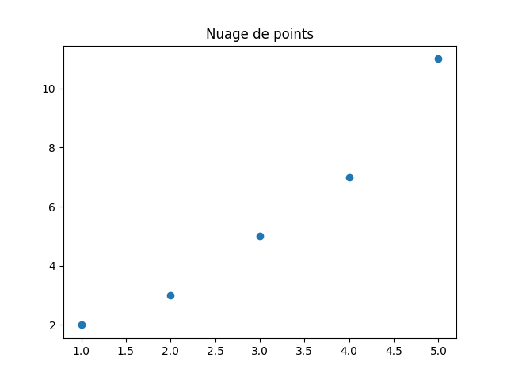
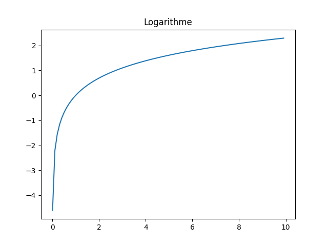

TP 6 - Représentations graphiques avec Matplotlib
Les parties en italique sont des approfondissements qui pourraient être utiles.
Présentation de Matplotlib
Matplotlib permet de créer des représentations graphiques de données. Il est possible de créer des graphiques en 2D et 3D, des histogrammes, des courbes, etc.
Pour importer Matplotlib, il faut utiliser la commande suivante:
Création de graphiques simples
Pour créer un graphique simple, il faut utiliser la fonction plot de Matplotlib. Il est possible de personnaliser le graphique en ajoutant des titres, des légendes, des axes, etc.
import matplotlib.pyplot as plt
x = [1, 2, 3, 4, 5]
y = [2, 3, 5, 7, 11]
plt.plot(x, y) # Permet de dessiner la courbe, en reliant les différents points
plt.title("Graphique simple") # Titre du graphique
plt.xlabel("Axe des X") # Titre de l'axe des X
plt.ylabel("Axe des Y") # Titre de l'axe des Y
plt.show() # Affiche le graphique

On peut aussi utiliser la fonction scatter pour créer un nuage de points.
import matplotlib.pyplot as plt
abscisses = [1, 2, 3, 4, 5]
ordonnees = [2, 3, 5, 7, 11]
plt.scatter(abscisses, ordonnees) # Permet de dessiner un nuage de points
plt.title("Nuage de points") # Titre du graphique
plt.show() # Affiche le graphique

Personnalisation de graphiques
Il est possible de personnaliser les graphiques en ajoutant des titres, des légendes, des axes, etc. Il est aussi possible de changer la couleur et le style des lignes.
import matplotlib.pyplot as plt
x = [1, 2, 3, 4, 5]
y = [2, 3, 5, 7, 11]
plt.plot(x, y, color='red', linestyle='--', linewidth=2) # Crée une ligne rouge en pointillés de 2 pixels d'épaisseur
plt.scatter(x, y, color='blue', marker='o', label="Point") # Ajouter des points ronds sur la ligne
plt.title("Graphique personnalisé") # Titre du graphique
plt.xlabel("Axe des X") # Titre de l'axe des X
plt.ylabel("Axe des Y") # Titre de l'axe des Y
plt.grid() # Affiche une grille
plt.legend(["Ligne rouge",
"Points de la ligne"], loc="upper left")
# Affiche une légende, chaque élément de la liste correspond à un élément du graphique,
# dans l'ordre du code (plt.plot est en premier dans le code, donc "Ligne rouge" est en premier dans la liste)
plt.show() # Affiche le graphique

Il est également possible de créer une légende d'une autre façon:
import matplotlib.pyplot as plt
x = [1, 2, 3, 4, 5]
y = [2, 3, 5, 7, 11]
plt.plot(x, y, color='red', linestyle='--', linewidth=2, label="Ligne rouge")
plt.scatter(x, y, color='blue', marker='o', label="Points de la ligne")
plt.legend() # On ne met rien dans plt.legend car on a déjà mis les labels dans plt.plot et plt.scatter
plt.show()

Générer des graphiques via des fonctions
Il faut en premier connaître deux fonctions de numpy:
- linspace: permet de créer une matrice de valeurs entre deux bornes, avec un nombre de valeurs donné. Par exemple, numpy.linspace(0, 10, 5) crée une matrice de 5 valeurs entre 0 et 10: [0., 2.5, 5., 7.5, 10.]
- arange: permet de créer un tableau de valeurs entre deux bornes, avec un pas donné. Par exemple, numpy.arange(0, 10, 2) crée un tableau de valeurs entre 0 et 10, avec un pas de 2: [0, 2, 4, 6, 8]
Il faudra choisir entre ces deux fonctions en fonction de ce que l'on veut faire.
Ces deux fonction génerent une matrice ligne. Il est donc possible d'utliser les fonctions mathématiques de numpy sur ces matrices. Par exemple, numpy.exp permet de calculer le sinus de chaque valeur de la matrice.
import numpy as np
x = np.linspace(0, 10, 5) # Crée une matrice de 5 valeurs entre 0 et 10
y = np.exp(x) # Crée une matrice des valeurs de exp(valeur) pour chaque valeur de la matrice x
print(y) # Affiche la matrice [1.00000000e+00 1.21824940e+01 1.48413159e+02 1.80804241e+03 2.20264658e+04]
Exemple en utilisant linspace pour la fonction sinus:
import matplotlib.pyplot as plt
import numpy as np
x = np.linspace(-2 * np.pi, 2 * np.pi, 100) # Crée un tableau de 100 valeurs entre -2pi et 2pi
y = np.sin(x) # Crée un tableau de 100 valeurs entre -1 et 1
plt.plot(x, y)
plt.title("Sinus") # Titre du graphique
plt.show() # Affiche le graphique

Exemple en utilisant arange pour la fonction log:
import matplotlib.pyplot as plt
import numpy as np
x = np.arange(0.01, 10, 0.1) # Crée un tableau de valeurs entre 0.01 et 10, avec un pas de 0.1
y = np.log(x) # Crée un tableau de valeurs entre 0 et 2.3
plt.plot(x, y)
plt.title("Logarithme") # Titre du graphique
plt.show() # Affiche le graphique

Exemples
Voir Révisions sur les fonctions.ipynb.
Fiche de l'Académie de Versailles (donnée par la prof): Fiche PDF
Lien vers le fichier sur le site de l'Académie de Versailles: https://phychim.ac-versailles.fr/IMG/pdf/tuto_python_matplotlib.pdf